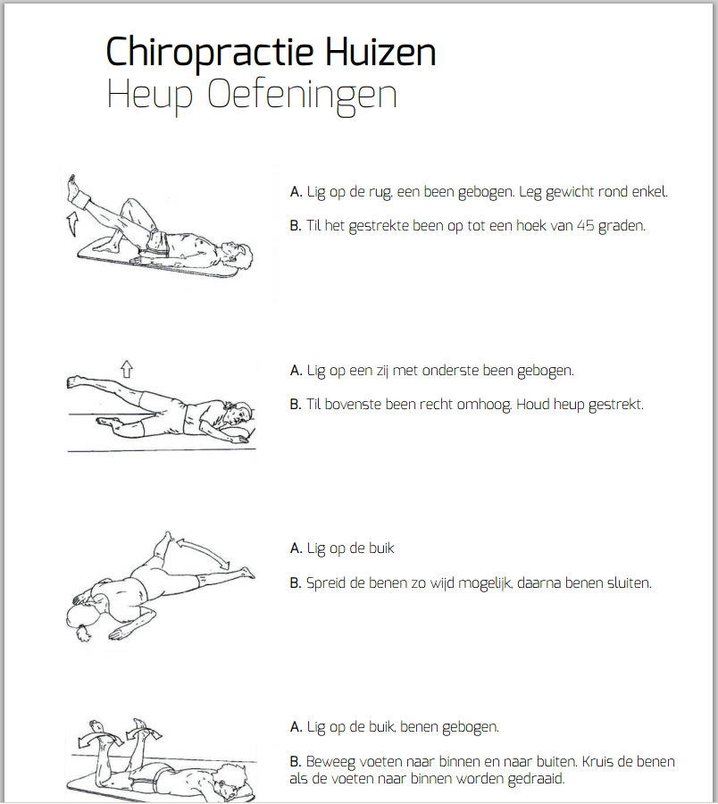

Lying Abduction Sideways
Position
Lay sideways with the lower leg bend and the other leg stretched out.
Indication
Tilt the leg that's on top up as far as possible. This angle will be around 45º.
- This exercise improves the mobility and strength of lifting sideways of the operated leg. This is of importance for while walking.
